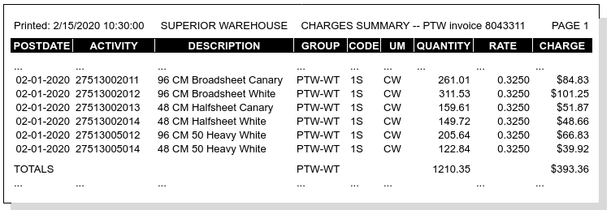
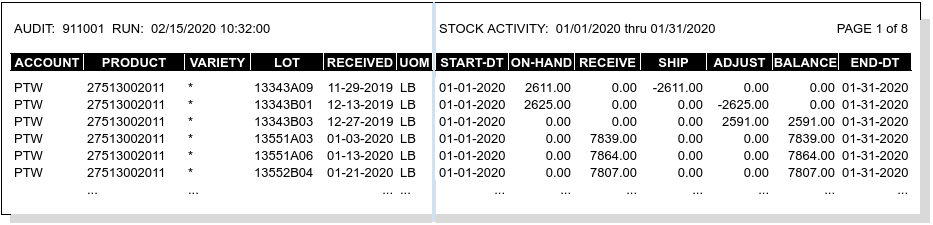
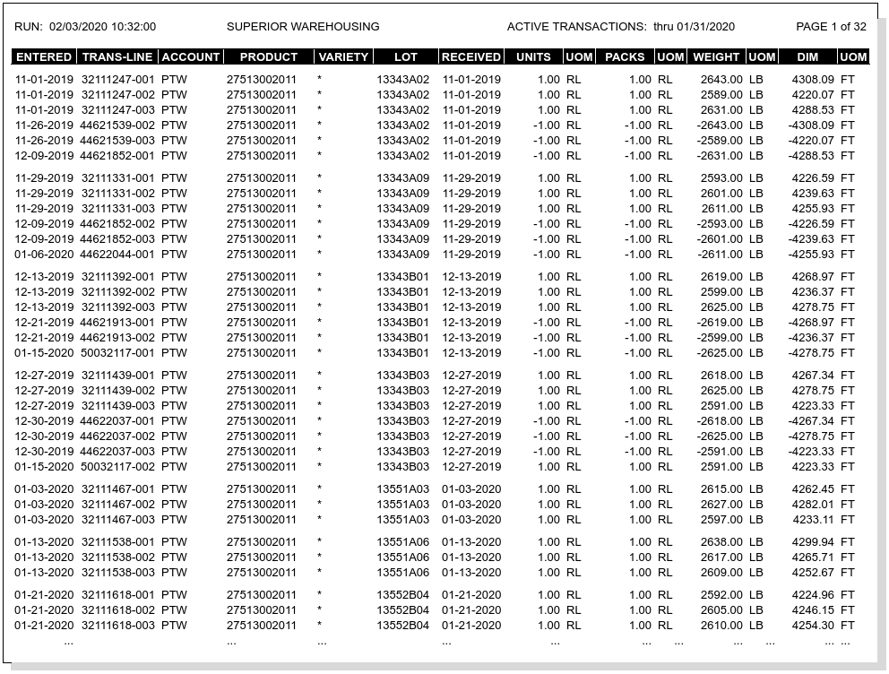

Recurring Calculation Audits¶
Recurring Reports¶
Recurring calculations produce two audit trails. The Stock Activity Audits details inventory stock movement during the recurring period, resulting in a quantity balance to be billed. The Recurring Charges Audits lists charges billed for the quantity balance.
The customer should receive both reports with the recurring storage invoice, one report for inventory management and the other for accounting.
Note
Inventory may be tracked by unit, lot, or product, but the stock activity is reported by lot or product using the units of the storage charges. Then charges are summarized and reported by product only.
Recurring Charges Audits¶
Recurring charges are always audited with a version of the Charges Summary report, as shown following.
Note
Each row of this report lists charges for one product identifier/variety combination. The Activity column contains the product identifier; the Description shows the product description, not the charge description.
Stock Activity Audits¶
Billing quantities for stock activity and balances are captured with the Stock Activity Audit. This report is divided into two sections: identifying information for each item on the left, and quantitative data on the right.
Columns for the report identifier section are:
| Column Name | Description |
|---|---|
| AUDIT | (heading) Calculation Batch Number |
| RUN DATETIME | (heading) Date Time batch started |
| ACCOUNT | Customer Account Code |
| UOM | Billing Quantity Unit of Measure |
| PRODUCT | Product Code Identifier |
| VARIETY | Variety Code, if used |
| LOT | When tracking lots, the Lot Number |
| RECEIVED | Inventory date Posted + freedays |
| UOM | Per code UOM (units, packages, ...) |
AUDIT and RUN datetime apply to the entire report, and so these items appear in the report identifier section heading, as shown in the following sample Stock Activity report:
Activity Quantitative Data¶
The following table lists quantitative data from the right side of the activity report. Again, calendar range BEGINNING and ENDING apply to the entire report and so these items appear in the data section heading. All data columns are listed below.
| Column Name | Description |
|---|---|
| RANGE BEGINNING | (heading) Calendar Last Date + 1 |
| RANGE ENDING | (heading) Calendar Next Date |
| STARTING DATE | Lot Anniversary Starting Date |
| ON HAND | Lot Balance on Starting Date |
| RECEIVED | Quantity Received during Period |
| SHIPPED | Quantity Shipped during Period |
| ADJUSTED | Quantity Adjusted during Period |
| ENDING BALANCE | Lot Balance at Period Ending Date |
| ENDING DATE | Lot Anniversary Ending Date |
For a lot to be included in a particular recurring calculation batch, the lot anniversary END DATE must fall within the RANGE STARTING to ENDING bracket of the calculation batch. Lot anniversary START DATE and END DATE values are determined by the account’s recurring calendar, and by the account’s recurring configuration.
Period Transaction Reporting¶
The Received, Shipped, and Adjusted columns of an Activity report are based on the inventory transactions posted in the period. A transaction detail report may be produced to audit the Activity Report, as shown following:
